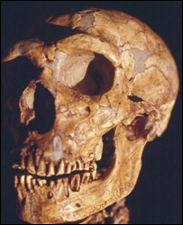

Sobre o Modelo
O crânio do Homem de Neandertal apresenta características marcantes como a arcada supraciliar proeminente, caixa craniana alongada e rosto robusto. Os neandertais foram hominíneos que habitaram a Eurásia e conviveram com os humanos modernos.
Origem
Europa e Ásia Ocidental (Eurásia)
Data Histórica
Entre ~400.000 e 40.000 anos atrás
Curiosidades
- Adaptados a climas frios, tinham corpo mais robusto e nariz largo.
- Capacidade craniana média comparável ou até maior que a de humanos modernos.
- Utilizavam ferramentas de pedra, controlavam o fogo e praticavam cuidados com os doentes.
- Há evidências de enterramentos e possíveis manifestações simbólicas.